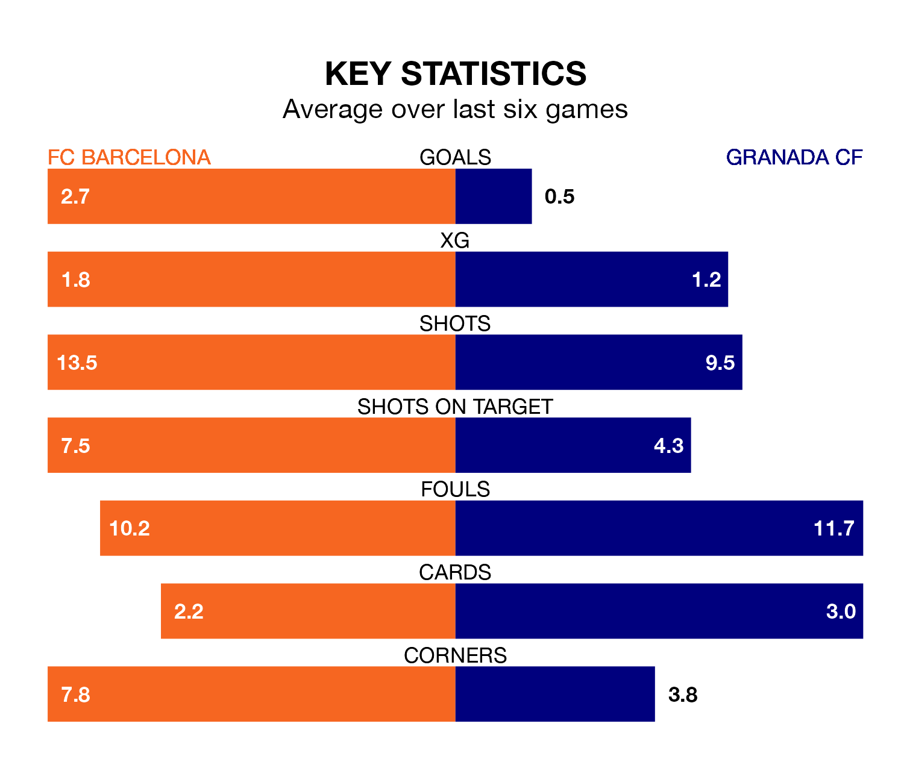

Mid-season relegation candidates Granada CF face a challenge away against high-flying FC Barcelona at Estadi Olímpic Lluís Companys on Sunday.
Granada CF are 19th in the La Liga table, and have picked up just two wins and five draws in their 22 games to date.
Barcelona, meanwhile, are fourth in the standings with 47 points, having won 14 and drawn five, and are 10 points behind table-toppers Real Madrid.
With 44 goals in 22 games so far this season, Barcelona are the league's joint-third-highest scorers with 2.0 goals per game. And they are conceding at an average rate, letting in 29 goals at a rate of 1.3 per game.
Granada, meanwhile, are below average scorers, with 1.0 goal per game, compared to a league average of 1.3. They have conceded 2.0 goals per game.
Barça are in good form in La Liga, with four wins and a draw from their last six games.
With a win and five losses over that period, the away team's form is much worse – they have taken three points from 18, compared to the hosts' 13.
In the last 10 years, Barcelona and Granada have played each other on 15 occasions. Barcelona won nine of them, Granada three, and they drew three times.
On average, Barcelona scored 2.4 goals and Granada 0.9 in those matches.
Their last meeting was on October 8, when they played out a 2-2 draw.
In Robert Lewandowski, Barcelona have one of the league's sharpest shooters so far this season. He has notched eight goals in 20 appearances, to sit ninth in the scoring charts.
His goal rate of one every 199 minutes is slightly quicker than that of Samu Omorodion, Granada's top scorer with a goal every 164 minutes, and a total of seven goals in 21 games.
Barcelona's last match was on January 31, a 1-0 win against CA Osasuna, with Vitor Roque getting the goal for Barcelona.
Granada lost 2-0 against Getafe CF last time out, on January 29.
Updated: 15:45 (UTC), 02/02/24